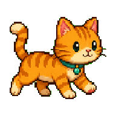
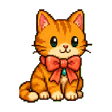
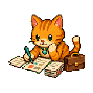
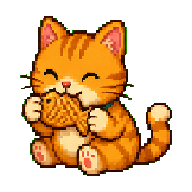
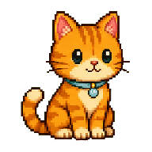
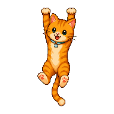

姿勢工作台
上傳 PNG 或 GIF 動畫，設定拖曳、走動、休息、攀附與下墜等姿勢。
Desktop Pet Studio 是能由你親手打造的 Windows 桌面寵物。放入姿勢動畫、設定提醒，或讓牠陪你工作、吃飯與慢慢變得親近。
Desktop Pet Studio 是由你亲手打造的 Windows 桌面宠物。放入姿势动画、设置提醒，或让它陪你工作、吃饭与慢慢变得亲近。
Desktop Pet Studio is a Windows desktop companion you can make your own. Add pose animations, set reminders, and let your pet work, snack, and grow closer beside you.
CREATE, REMIND, CARE
從多張影格動畫到日常互動，所有核心玩法都圍繞著你的素材、時間與生活習慣而設計。

上傳 PNG 或 GIF 動畫，設定拖曳、走動、休息、攀附與下墜等姿勢。

走動可隨機延伸至左右邊界，自動鏡像朝向；掉落後也會有自然的小彈跳。

鬧鐘、行事曆、倒數計時與任務清單，都能搭配姿勢、氣泡、音效與全螢幕提醒。

透過工作、商城與背包照顧飽食度、親合度與心情，換來更有個性的回應。

固定專注模式可停在你指定的位置；免打擾與快捷鍵讓陪伴不打斷重要時刻。

內建 AI 素材助手與創作者 JSON 格式，讓新姿勢、文字與互動方式能被清楚分享。
CREATE, REMIND, CARE
从多张帧动画到日常互动，所有核心玩法都围绕你的素材、时间与生活习惯而设计。
上传 PNG 或 GIF 动画，设置拖曳、走动、休息、攀附与下坠等姿势。
走动可随机延伸至左右边界，自动镜像朝向；掉落后也会有自然的小弹跳。
闹钟、日历、倒数计时与任务清单，都能搭配姿势、气泡、音效与全屏提醒。
透过工作、商城与背包照顾饱食度、亲合度与心情，换来更有个性的回应。
固定专注模式可停在你指定的位置；免打扰与快捷键让陪伴不打断重要时刻。
内置 AI 素材助手与创作者 JSON 格式，让新姿势、文字与互动方式能被清楚分享。
CREATE, REMIND, CARE
From multi-frame animation to everyday interaction, every core feature is shaped around your art, time, and routines.
Upload PNG or GIF animation and define drag, walking, resting, edge-clinging, and falling poses.
Walking reaches both desktop edges, mirrors direction automatically, and lands with a gentle little bounce.
Alarms, calendar events, timers, and task lists can all use a pose, bubble, sound, and fullscreen alert.
Use work, the shop, and your inventory to care for hunger, affinity, and mood with more personal reactions.
Focus mode stays where you place it, while do-not-disturb rules and shortcuts protect important moments.
The AI Asset Helper and creator JSON format make it clear how to share poses, words, and new interactions.
OPTIONAL CALENDAR SYNC
你可以選擇連接 Google Calendar，將近期活動同步成桌寵的本機提醒。登入在預設瀏覽器完成，程式只讀取建立提醒所需的行事曆事件。

OPTIONAL CALENDAR SYNC
你可以选择连接 Google Calendar，将近期活动同步成桌宠的本地提醒。登录在默认浏览器完成，程序只读取建立提醒所需的日历事件。
OPTIONAL CALENDAR SYNC
You may connect Google Calendar and turn upcoming events into local desktop-pet reminders. Sign-in happens in your default browser, and the app reads only the calendar events needed to create reminders.
YOUR DESKTOP, YOUR PET
使用 6 幀左右、每秒約 6 幀的動態素材建立基礎姿勢，走動圖請面向右方，系統會自動鏡像。
用提醒、氣泡文字與照顧系統，讓桌面角色會因時間和你的互動而有不同反應。
使用工作坊相容的 JSON 設定，將姿勢、移動、音效與 AI 素材說明整理成創作內容。
YOUR DESKTOP, YOUR PET
使用约 6 帧、每秒约 6 帧的动态素材建立基础姿势，走动图请面向右方，系统会自动镜像。
用提醒、气泡文字与照顾系统，让桌面角色会因时间和你的互动而有不同反应。
使用创意工坊兼容的 JSON 设置，将姿势、移动、音效与 AI 素材说明整理成创作内容。
YOUR DESKTOP, YOUR PET
Build base poses from roughly six frames at about six frames per second. Supply walking art facing right; the app mirrors it when needed.
Use reminders, bubble text, and care systems so your companion reacts differently to time and your interactions.
Use workshop-compatible JSON to package poses, movement, sound effects, and AI asset guidance for creators.